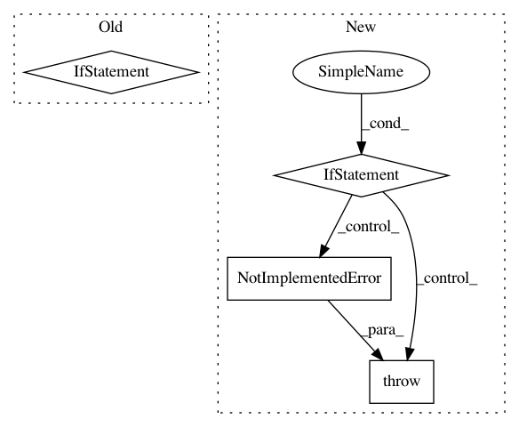

3e530f0fb84ba99e7cb6e84cc3547f1e1e5f01eb,coremltools/converters/nnssa/coreml/ssa_converter.py,SSAConverter,convert,#SSAConverter#,342
Before Change
if op_type not in self.CONVERT_FUNCTION_MAP:
raise NotImplementedError(
"[SSAConverter] Op type "{}" not implemented.".format(op_type))
if builtins.is_tensor(node.datatype):
print(
"[SSAConverter] [{}/{}] Converting op "{}" of type "{}", output shape: {}".format(
idx + 1, len(instruction_order), node_name, op_type, node.datatype.get_shape()))
else:
print(
"[SSAConverter] [{}/{}] Converting op "{}" of type "{}"".format(
idx + 1, len(instruction_order), op_type, node_name))
convert_func = self.CONVERT_FUNCTION_MAP[op_type]
convert_func(node)
def _get_builder(self, func=None):
After Change
conversion_message = ""
if custom_conversion_name is not None:
conversion_message = " with custom conversion function"
elif op_type in self.CONVERT_FUNCTION_MAP:
convert_func = self.CONVERT_FUNCTION_MAP[op_type]
elif self.add_custom_layers:
// Add custom layer
convert_func = self._convert_custom_layer
conversion_message = " with custom layer"
else:
raise NotImplementedError(
"[SSAConverter] Conversion for op %s not implemented, terminating..." %
(op_type))
print("[SSAConverter] [{}/{}] Converting op type \"{}\", of name \"{}\" {} {}".format(
idx + 1, len(instruction_order), op_type, node_name, conversion_message,
(("(output shape: " + str(node.datatype.get_shape()) +")") if builtins.is_tensor(node.datatype) else "")))
In pattern: SUPERPATTERN
Frequency: 3
Non-data size: 4
Instances
Project Name: apple/coremltools
Commit Name: 3e530f0fb84ba99e7cb6e84cc3547f1e1e5f01eb
Time: 2019-09-27
Author: bsonawane@apple.com
File Name: coremltools/converters/nnssa/coreml/ssa_converter.py
Class Name: SSAConverter
Method Name: convert
Project Name: apple/coremltools
Commit Name: d1e6e624ef891543c5bba32bb0a696d350714693
Time: 2019-08-20
Author: smq@apple.com
File Name: coremltools/models/utils.py
Class Name:
Method Name: _convert_nn_spec_to_half_precision
Project Name: rail-berkeley/softlearning
Commit Name: 20fe7b4cbf62f6223241d6cafc6e8ea48701efdd
Time: 2018-10-22
Author: hartikainen@berkeley.edu
File Name: softlearning/misc/nn.py
Class Name:
Method Name: feedforward_model